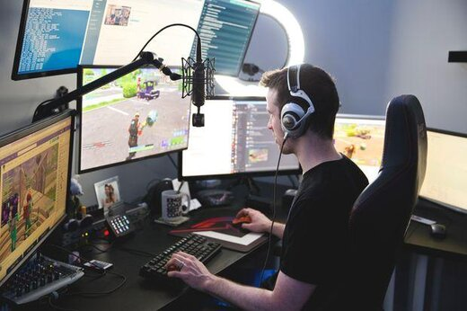
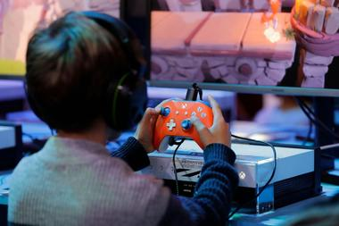
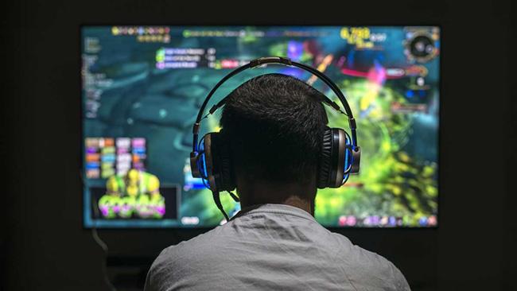
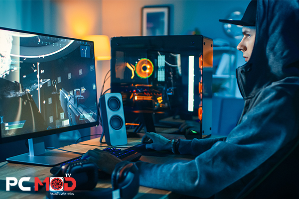
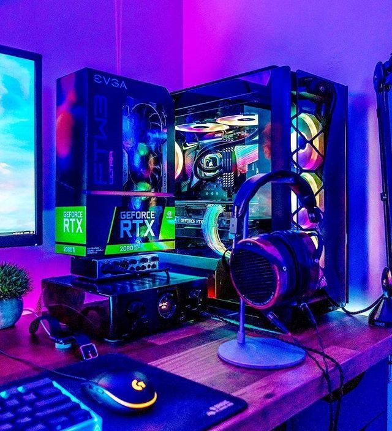

صنعت ساخت بازی های رایانه ای
پی آمدهای بازی های رایانه ای
آثار مثبت بازی های رایانه ای
مقدمه
به باور روان شناسان و جامعه شناسان، بازی و اسباب بازی که عمیقاً با زندگی کودکان و نوجوانان پیوند خورده است، در روحیه و تکوین شخصیت آنان، اثر عمیقی بر جای می گذارد و باعث می شود که کودکان از طریق آشنایی با الگوها و هنجارهای جامعة خویش و درونی سازی ارزش های آن در راستای اجتماعی شدن، گام بردارند. کاپلان دربارة نقش بازی بر رشد اجتماعی کودک می نویسد: «بسیاری از تعاملات میان فردی کودکان پیش دبستانی، در چهارچوب بازی روی می دهند و روابط کودکان با والدین، خواهر و برادرها و هم سالانشان، در مقطع پیش دبستانی، به شدّت متحوّل می شود».1 در مورد بازی و رشد عاطفی کودک نیز گفتنی است: «بازی، بهترین وسیله برای رشد و شکوفایی احساسات کودک و بهترین راه برای پرورش هیجان ها و عواطف اوست. در حین بازی است که او چگونگی بروز عواطف، کنترل و ارضای مناسب آن را یاد می گیرد. هر چند کودک بین واقعیت و بازی فرق قائل است، ولی در عین حال، صداقت کودکانه را در بازی ظاهر می سازد. احساس ها، تشویش ها و اضطراب های کودک در ضمن بازی، حقیقی هستند».2 پدیدة بازی بر حسب علل، زمینه ها و شرایط، طی زمان ها و مکان های مختلف، به لحاظ ساختار، محتوا و کارکرد(اثر)، شکل های گوناگونی به خود گرفته است. بر این اساس، از نیمة دوّم قرن بیستم و همراه و همگام با تحوّلات و پیشرفت ها در صنایع الکترونیکی، بازی ها و اسباب بازی هایی جدید و متفاوت با گذشته، پا به عرصه وجود گذاشته که اصطلاحاً «بازی های رایانه ای»3 نامیده می شود.4 گرچه تاریخچة بازی های رایانه ای به دهة 1970م. بر می گردد؛ امّا در مدّت کوتاهی پس از پیدایش، نه تنها تحوّل عمیق و اساسی در نظام تفریحات و سرگرمی کودکان به وجود آوردند، بلکه در حال حاضر، گسترة بازی های رایانه ای به عنوان یک وسیلة گذران اوقات فراغت، به عرصة بزرگ سالان نیز کشیده شده است. آثار فرهنگی و اجتماعی بازی های رایانه ای به گونه ای است که دیگر نمی توان به این بازی ها فقط به عنوان یک وسیلة گذران اوقات فراغت نگریست. اشاعه و آثار چنین بازی هایی، به حدّی است که از آنها با عنوان «انقلاب بازی های رایانه ای» یاد می کنند.
صنعت ساخت بازی های رایانه ای
صنعت ساخت بازی های ویدیویی و رایانه ای، در حال حاضر، به گسترده ترین و سودآورترین حرفه ها در صنعت سرگرمی کودکان تبدیل شده است. بازی های الکترونیکی در عین آن که خود دارای شبکه، سایت های مخصوص و گروه های گفت وگو و صحبت (چت) در اینترنت هستند، به صورت مجموعه ای صوتی و تصویری( برنامه های ویدیویی و تلویزیونی) به دیگر رسانه ها منتقل شده اند. همچنین به دلیل گسترش فناوری ها، می توانیم در آینده منتظر امکان بازی با ابزارهای جدیدتر نیز باشیم. استفاده از بازی های الکترونیکی از طریق تلویزیون، دستگاه های جیبی و رایانه های شخصی، هم اکنون به تلفن همراه، رایانه های جیبی و گیرنده های دیجیتال تلویزیونی نیز کشیده شده است.5 محتوای بازی ها به سرعت در حال تغییر است و با کاربردهای گرافیکی و به دلیل جاذبه ای که در آنها نهفته است، روز به روز واقعی تر به نظر رسیده، نظر کودکان و نوجوانان بیشتری را به خود جلب می نمایند. در این بین، رقابتی که بین شرکت ها و تولید کنندگان مختلف در تصاحب هرچه بیشتر بازار فروش به وجود آمده، آنها را بر آن داشته که با ارائة بازی های هر چه جالب تر و مهیج تر، سود بیشتری را به خود اختصاص دهند و متأسفانه موضوعی که در این آشفتگی بازار مورد توجه نیست، همان جنبه های اخلاقی و تربیتی مشتریان این بازی ها، یعنی کودکان است.6 گرچه بیشتر تحقیقات مربوط به بازی های الکترونیکی، از اواسط دهه 1990م. آغاز شده است؛7 امّا متأسفانه در کشور ما با وجود زیرساخت های فرهنگی و باورهای مذهبی متفاوت با کشورهای سازندة این گونه بازی ها، تحقیقات کافی در مورد اثرات بازی های رایانه ای و پیامدهای اجتماعی آنها صورت نگرفته است.
پی آمدهای بازی های رایانه ای
نگرانی از بازی های رایانه ای و ویدیویی را می توان بازتاب نگرانی گسترده تر جامعه دربارة رواج و کاربری روز افزون فن آوری اطلاع رسانی در مشاغل و حرفه های گوناگون، نظیر حذف مهارت فردی از کار، تنش های شغلی زاید، گوشه گیری از اجتماع، احساس درماندگی و... دانست. تاکنون پژوهش های مختلفی در موضوع اثرات بازی های رایانه ای انجام شده که اغلب به اثرات منفی این گونه بازی ها اشاره دارند، اما در نگاهی منطقی باید گفت که این نوآوری نیز همچون دیگر ساخته های دست بشر، دو رو دارد که یک روی آن، بهره گیری درست و مفید و روی دیگر آن، استفاده های نادرست و نامناسب است که گاهی، آسیب های فراوانی را در پی دارد. در ادامه، به آثار مثبت و منفی این بازی ها اشارة مختصری خواهد شد. آثار مثبت بازی های رایانه ای 1. پس از سال ها پژوهش، این موضوع ثابت شده که آموزش و پرورش کودکان، تنها به نوع رسمی آن، یعنی شکل مدرسه ای محدود نمی شود و رسانه های الکترونیکی، منابع بسیار عالی آموزش و پرورش می باشند و رایانه نیز تازه ترین شکل این رسانه هاست. طرفداران بازی های ویدیوئی این گونه بازی ها را منبع یادگیری و نیز سرگرمی به شمار آورده اند. به عقیدة برخی، فعالیت های موجود در بازی های ویدیویی می توانند هماهنگی بین چشم و دست را افزایش دهند و یا مهارت های ویژه ای برای تجسم فضایی یا ریاضیات را بیاموزند».8 بازی های رایانه ای به سبب انگیزه های بیشتری که در فراگیران پدید می آورند، می تواند در انتقال مواد آموزشی، تأثیر زیادی داشته باشند. افزایش سرعت خواندن و آموزش زبان از طریق بازی های رایانه ای تجربیات مثبتی در این زمینه بوده است. همچنین درس هایی مانند علوم و فیزیک را به کمک بازی های رایانه ای، بهتر می توان آموزش داد. 2. به خاطر انعطاف پذیری و نقش فعالی که فرد در حین بازی دارد، بازی ها در تربیت افراد خلاق تأثیر زیادی دارند.
آثار مثبت بازی های رایانه ای
. پس از سال ها پژوهش، این موضوع ثابت شده که آموزش و پرورش کودکان، تنها به نوع رسمی آن، یعنی شکل مدرسه ای محدود نمی شود و رسانه های الکترونیکی، منابع بسیار عالی آموزش و پرورش می باشند و رایانه نیز تازه ترین شکل این رسانه هاست. طرفداران بازی های ویدیوئی این گونه بازی ها را منبع یادگیری و نیز سرگرمی به شمار آورده اند. به عقیدة برخی، فعالیت های موجود در بازی های ویدیویی می توانند هماهنگی بین چشم و دست را افزایش دهند و یا مهارت های ویژه ای برای تجسم فضایی یا ریاضیات را بیاموزند».8 بازی های رایانه ای به سبب انگیزه های بیشتری که در فراگیران پدید می آورند، می تواند در انتقال مواد آموزشی، تأثیر زیادی داشته باشند. افزایش سرعت خواندن و آموزش زبان از طریق بازی های رایانه ای تجربیات مثبتی در این زمینه بوده است. همچنین درس هایی مانند علوم و فیزیک را به کمک بازی های رایانه ای، بهتر می توان آموزش داد. 2. به خاطر انعطاف پذیری و نقش فعالی که فرد در حین بازی دارد، بازی ها در تربیت افراد خلاق تأثیر زیادی دارند